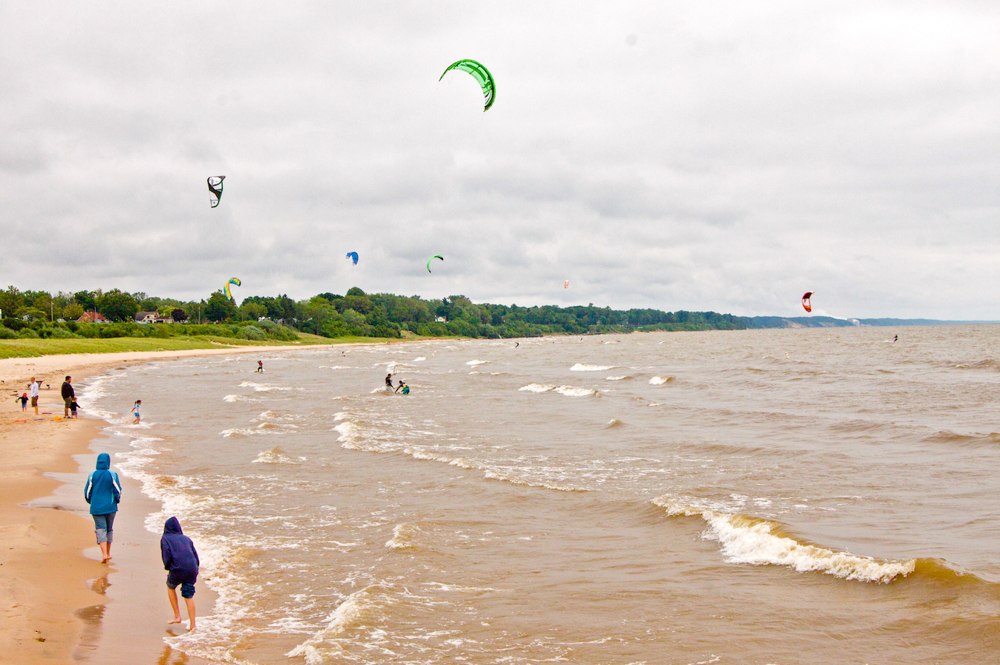

ProgressiveNet Demo
>
Object Detection
Progressive detector model converted from
SSD-MobileNetV2
, trained with MS COCO dataset.
Model size: 33.8MB
Total number of progress steps: 8
Transmission speed: 2MB/s
Backend: GPU(WebGL)

Detect objects